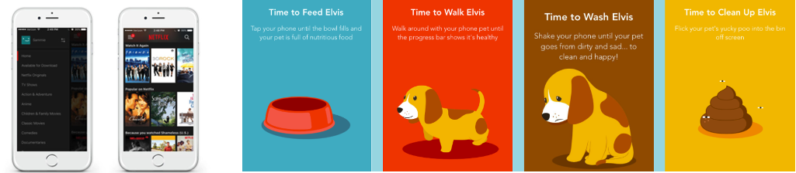

Overview
A smartphone application to educate new puppy owners on the importance of socialising their puppy while raising babies and young children. The application will create daily socialisation and training plans for each stage of the puppy’s development while incorporating fun and educational exercises so the parent can involve the children in the puppy’s training.
Motivation
As a qualified dog trainer and animal welfare advocate, I’ve seen first-hand what happens to dogs if they don’t receive the critical socialisation and training during puppyhood, and if the home they’re in isn’t dedicated, well, that “cute naughty” puppy is now just a “bad dog”.
During 2019 – 2020, according to the RSPCA, there are over 29 million pets in Australia (RSPCA, 2020), with 40% being dogs. It is estimated that Australians spend about $13 billion per year on their four-legged family members. According to Canstar, the average person dedicates around $13,000 to their dog over the course of its life (Canstar, 2017). This includes food, vet care, toys, pet insurance and so on. What tends not to be a priority, is puppy socialisation and training and this can lead to behavioural issues in the future.
The majority of the population know very little about dog behaviour, which is a serious issue because people ignore the signs and push dogs over threshold, which can result in someone being bitten which ends with the dog being taken to the vet or pound and likely killed. Research conducted in 2012-2013 discovered that approximately 211,655 dogs end up in pounds, and of that, approximately 43,900 are killed (21%). The main reason dogs end up in or don't get out of a pound is behavioural issues.
Some owners will attend a four-week puppy class, which are often run in vet clinics by unqualified trainers such as vet nurses. The classes tend to cover more vet related topics rather than behavioural needs and the importance of positive socialisation within the puppy's first 16 weeks of life ('The Critical Period of Socialisation'). A class like this also tends to advise owners not to take their puppies out of the home until they've had all three vaccinations, which is detrimental to the puppy's development. Then, by the time the puppy class is over, the puppy is beyond 16 weeks of age, and the Critical period is over. A puppy's ability to socialise efficiently and effectively, beyond this point, diminishes by the day. The first year of a puppy's life is the most important. It's when owners need to set strong foundations of socialisation and training during this time.
With parents needing to focus on a puppy’s socialisation as well as raising a toddler or young child, it can make the process of raising a puppy ten times harder and without the required knowledge and training skills, this often results in frustration targeted at the puppy and the puppy being either rehomed or dumped in a pound later in life when the behavior issues have begun to show.
Creating a mobile application using something like MIT App Inventor tools, will make it easy for owners to access the information they need daily.
Description & Features
The app will be intuitive and easy to navigate, enjoyable, user-friendly and simplistic. It will also be engaging for both parent and child to use.
Layout comparison: Netflix App with a section tailored to children with bright colours, pictures and bigger buttons etc.

The mobile application will include:
- Questionnaire to determine baseline of puppy/dog and owner/s to determine age of puppy/dog, age and number of children, breed and the owners life commitments, how much the owner knows about dog behaviour, how much socialisation has the puppy/dog already had, have / are they attending puppy class etc
- Development of a tailored Puppy Socialisation Plan (PLP) and/or Dog Training Plan (DTP) and Child and Puppy Plan (CAP) (created from questionnaire data).
- Notifications: PLP and DTP data will be broken down to daily tasks and sent as notifications to the owner.
- Badges: Each time the owner completes a daily task they receive a virtual badge and each week a virtual weekly completion certificate.
- Sociable Sounds: there will be a section that provides different sounds for the puppy/dog to socialise to e.g. sounds of car, other dogs, babies crying etc.
- Fun, positive, socialisation exercises for puppy and owner - including video demonstrations.
- General obedience techniques for dog and owner – including video demonstrations.
- Techniques on how to deal with different situations/new environments - including video demonstrations.
- Social networking with other puppy and rescue dog owners – share pics and updates on progress etc.
- Education modules on the importance of socialisation, dog obedience, understanding behavioural issues and why they occur, observing the early warning signs, teaching children how to correctly interact with a puppy / dog, raising puppies and children together.
- 1hr Live Q&A with a trainer session (every 3 months)
Tools and Technologies
Skills Required
I would put together my project team, consisting of the following key members:
Outcome
The problem with people not understanding dog behaviour and the importance of puppy socialisation affects dogs and families across the world and impacts them in ways that sometimes ends with the puppy or dog losing its life, due to no fault of its own. A successful solution to this problem would provide families with the necessary knowledge and skills to balance raising a young child while providing their puppy with the adequate socialisation and training required to live in harmony.
Raising a young child can sometimes make getting out of the house impossible, so going to a puppy class may not be very realistic. The app would provide all the relevant and required information about puppy socialisation as well as into the puppy’s adulthood. The training plans would be broken down to quick and simple tasks through the day and each task would be fun and engaging for the puppy, parent and child.